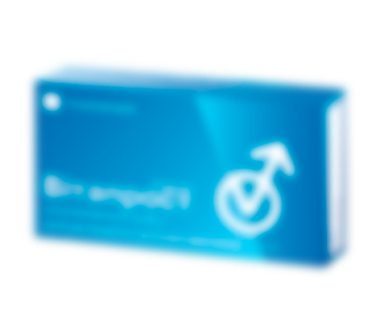

COSA CI VENDONO LE FARMACIE NOSTRANE PER
LE CURE DELLA PROSTATITE
E COME QUESTA MALATTIA SI CURA IN ALTRI PAESI DELL'UE, USA E CINA?
COSA CI VENDONO LE FARMACIE NOSTRANE PER LE CURE DELLA PROSTATITE E COME QUESTA MALATTIA SI CURA IN ALTRI PAESI DELL'UE, USA E CINA?
Secondo le statistiche mediche, ai giorni nostri sono quasi assenti gli uomini con più di 35 anni che non hanno problemi di prostatite. In alcuni la prostata sta per infiammarsi, in altri è già così infiammata che ha bloccato le vie urinarie e ha comportato tantissimi disturbi della minzione e ha rovinato la loro vita sessuale. Ma anche in questo caso gli uomini non si affrettano ad andare dai medici per curarsi. Il motivo? Tutti sanno che il trattamento della prostatite è molto costoso e poco piacevole. Si devono prendere tantissimi antibiotici e bisogna recarsi dall'urologo per i massaggi rettali, la terapia con i rimedi popolari è anche spiacevole. Anche se riuscirete a sopportare tutto questo, c'è una probabilità del 90% di una ricaduta della malattia.
COME SBARAZZARSI DELLA PROSTATITE IN MANIERA DEFINITIVA? CE LO RACCONTA IL PRINCIPALE UROLOGO DEL PAESE.
Dott. Francesco Marchetti
Esperienza di lavoro — 34 anni.
Uno dei più eminenti medici d'Italia. Membro dell’Accademia Europea di Urologia e Andrologia e della New York Academy of Sciences. Esperto dei programmi televisivi medici. Coordinatore dell'Associazione Europea della Chirurgia Laser.
Corrispondente: "Dottor Marchetti, ci racconti quali saranno le conseguenze di una prostatite non curata e della minzione frequente? È vero che il trattamento con i metodi popolari può portare allo sviluppo del cancro alla prostata?"
Dott. Francesco Marchetti: Sì, è assolutamente corretto. La prostatite non svanisce mai da sola. Con l’andar del tempo la condizione del paziente peggiora soltanto. Se si sono manifestati i disagi alla minzione, è un brutto segno. Significa che la prostata è già ingrossata e in qualsiasi momento possono iniziare a formarsi cellule tumorali. Di solito, dal momento dei primi problemi alla minzione all'inizio dello sviluppo del cancro (nel caso del trattamento mancato della prostatite) passano 1-1.5 anni.
Dapprima il tumore maligno è asintomatico, ma poi le cellule tumorali si accumulano, il tumore aumenta le sue dimensioni e dopo qualche tempo la persona muore. Il cancro alla prostata è incurabile.
Tra l'altro, molti medici si mettono d’accordo con le farmacie e nascondono i rimedi efficaci, spillando regolarmente denaro dagli uomini. Ci sono sempre più uomini con questi problemi in età di 30, 25 o perfino 20 anni.
I medici spiegano la prevalenza della malattia con i fattori seguenti:
- stile di vita sedentario;
- vita sessuale irregolare;
- cattivi abitudini;
- stile di vita sedentario;
- vita sessuale irregolare;
- cattivi abitudini;
Diagnosticare la prostatite è abbastanza facile anche senza l'istruzione medica:
Dolori lancinanti:
- - Nel basso addome, nello scroto;
- - nel perineo o nel pene;
Disturbi urinari:
- - minzione frequente, bruciore dell'uretra;
- - la sensazione della "vescica non completamente vuota";
- - difficoltà a urinare (flusso debole);
Disturbi della funzione sessuale:
- - riduzione del desiderio sessuale;
- - deterioramento della durata e della qualità dell'erezione;
Disturbo dell’eiaculazione:
- - eiaculazione precoce o problemi con il suo raggiungimento;
- - eiaculazione debole
Uccidere rapidamente la prostatite e riaccendere le funzioni sessuali
Molti uomini convivono con la prostatite per anni, malgrado che la qualità della loro vita si peggiori significativamente. Non sospettano che questi disagi più o meno compatibili con la vita possono comportare le conseguenze irreversibili.
Corrispondente: "Allora cosa devono fare gli uomini affetti da questa malattia?"
Dott. Francesco Marchetti: Paragoniamo due metodi del trattamento della prostatite. Come la prostatite si cura da noi (e come NON SI DEVE curarla). La procedura standard del trattamento della prostatite ha inizio dal momento in cui ci si reca in una clinica o dal medico specialista. Non importa se è statale o privata, si deve pagare tanto in qualsiasi caso.
In aggiunta ai medicinali "raccomandati", per alleviare i sintomi i dottori prescrivono sempre il massaggio rettale della prostata o il trattamento con l'uso degli apparecchi con la stessa funzione. È una procedura umiliante e molto spiacevole – il massaggio è fatto con il dito tramite l'ano.
Il massaggio richiede in media 10-14 sedute. Per ogni seduta, ovviamente, si deve pagare. All'estero questo tipo di massaggio non lo fanno già da oltre 20 anni, siccome i rimedi moderni sono in grado di curare la prostatite da soli!
Come la prostatite si cura negli Usa, l'Ue e Cina (e come SI DEVE curarla)
Per guarire dalla prostatite non è necessario recarsi dal dottore. Basta andare in farmacia appena sono comparsi i primi sintomi e comprare un rimedio contro la prostatite che ha dimostrato la propria efficacia in giro di molti anni. Questo prodotto unico si chiama Prostatricum. Questo rimedio non è profittevole per la nostra mafia delle case farmaceutiche che guadagna sulla dipendenza dai farmaci che alleviano i sintomi dolorosi ogni anno. Non vogliono curare definitivamente il problema con l'aiuto di questo rimedio economico e abbordabile.
Corrispondente: "La situazione in Italia potrebbe cambiare? I nostri uomini riusciranno a sbarazzarsi del dolore?"
Dott. Francesco Marchetti: Credo di no. Per adesso è impossibile da trovare Prostatricum nelle farmacie del nostro paese. Paragoniamo Prostatricum e un altro farmaco per la cura della prostatite che è tanto amato dai farmacisti italiani:
|
Prostatricum |

Altri farmaci |
|---|---|
Azione
|
Azione
|
Effetti
aggiuntivi
|
Effetti
aggiuntivi
|
Effetti
collaterali, danni per l'organismo
|
Effetti
collaterali, danni per l'organismo
|
| Principio di funzionamento• Agisce sulla prostata in modo integrato grazie alla formula naturale che contiene estratti unicie assicura un effetto antinfiammatorio e rafforzante. Elimina tutta la flora patogena, migliora la struttura e le funzioni della prostata. È raccomandato in caso della prostatite cronica, acuta e batterica. | Principio di funzionamento• Toglie temporaneamente le sensazioni dolorose alla prostata mascherando lo sviluppo della malattia. Dopo la fine del ciclo di assunzione la malattia si acutizza di nuovo. |
| Composizione• Ingredienti naturali
vegetali |
Composizione• Contiene ingredienti sintetici
che causano gli effetti collaterali |
Purtroppo non si può sperare in cambiamenti positivi nell’ambito del lavoro di farmacie e medici italiani, in quanto il business farmaceutico è grandissimo e dà i profitti apolitici potenti.
Per fortuna, ora non è necessario comprare i medicinali in farmacie. Il Ministero della Salute è consapevole del problema e della disponibilità del rimedio e ha deciso di prendersi cura dei propri cittadini: è stato firmato un accordo con il produttore e ciò ha permesso di vendere Prostatricum al prezzo scontato sul sito ufficiale del produttore. Per ordinarlo basta andare sul sito e lasciare la propria richiesta. La spedizione è possibile quasi in ogni angolo d'Italia, il pagamento è alla consegna.
Uccidere rapidamente la prostatite e riaccendere le funzioni sessuali
-30%
Inserisci i tuoi dati e attendi la chiamata di un nostro operatore
Corrispondente: "Perfetto! Grazie per le informazioni, dottor Marchetti! Forse c’è qualcos’altro che vuole dire ai nostri lettori prima della fine della consulenza?
Dott. Francesco Marchetti: L'unica cosa che vorrei sottolineare è che non si deve essere indiffereni alla propria vita. La prostatite è una malattia molto pericolosa e con il mancato trattamento nel 75% dei casi si trasforma in un tumore maligno alla prostata. Se avete dei sintomi o vi hanno già diagnosticato la prostatite iniziate a combattere la malattia mentre si può ancora mettere un freno al suo peggioramento!
Parola alla redazione di
"Medicina Italia":
L'opportunità di comprare Prostatricum con uno sconto del quale ne ha parlato dottor Marchetti è disponibile fino a incluso. Si può ordinare Prostatricum al prezzo scontato solo sul sito ufficiale del produttore.
Avevo paura che dopo il completamento del ciclo tutto ricominciasse di nuovo. Ma niente di questo è avvenuto! Tra un mese dopo il ciclo d'assunzione ho fatto un altro ECO che ha mostrato che sono completamente sano. Quindi, si può facilmente sbarazzarsi di questa malattia a casa, senza andare dai medici.
Ha aiutato a sbarazzarsi della prostatite e a ripristinare la funzione sessuale in marito. Nonostante il fatto che aveva dei dubbi che tutto questo potesse aiutarlo. Pensava che fosse legato all'età, visto che in molti dei suoi amici dopo 40 anni sono comparsi i diversi problemi. Ma dopo il fine del ciclo di assunzione, marito non pensa più che sia vecchio.
Adesso continua a fare lo sport. Ha aggiunto anche il parapendio ai suoi hobby preferiti. Ma ora bada di più alla propria salute. Prima di tutto, prova di non raffreddarsi, se c'è la possibilità subito cambia i vestiti umidi, non aspetta fino alla prossima sosta. Ha anche cominciato a sempre mettere Prostatricum nel suo zaino. Dice che ci sono le diverse situazioni, è meglio iniziare a fare la profilassi subito senza aspettare la manifestazione della malattia e le torture che porta.
2 giorni infernali. Ho deciso di comprare Prostatricum, anche se avevo dei dubbi. L'ho usato secondo le istruzioni. Insomma, tra un giorno sono finalmente riuscito a dormire normalmente senza andare nel bagno. Ho dimenticato della prostatite, come se fosse un brutto sogno.